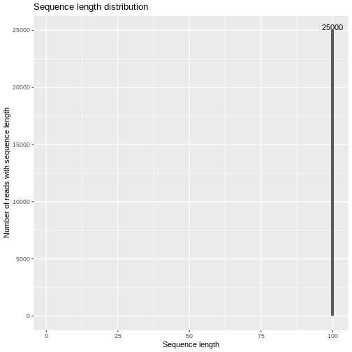
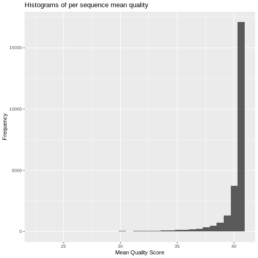
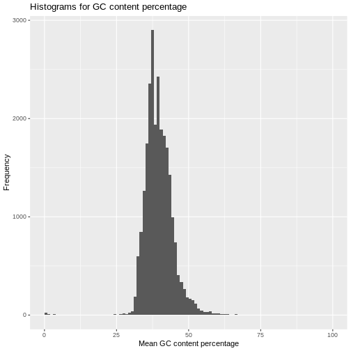
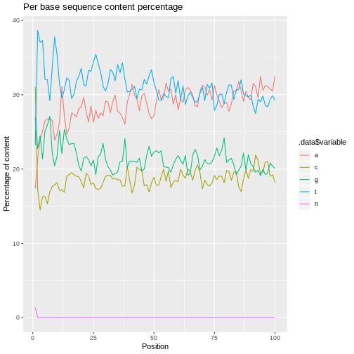
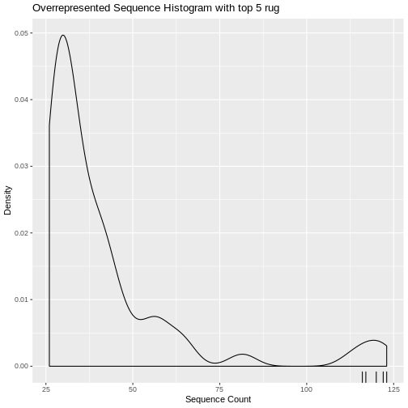
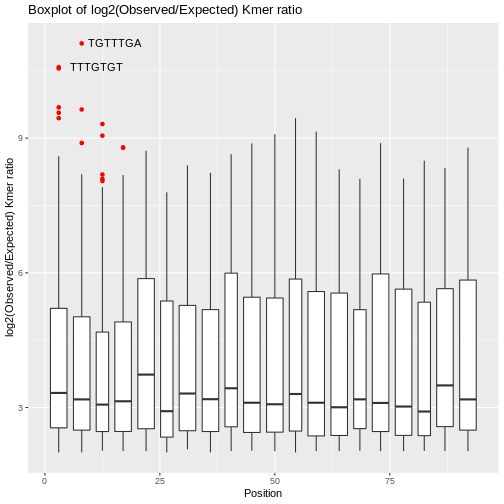
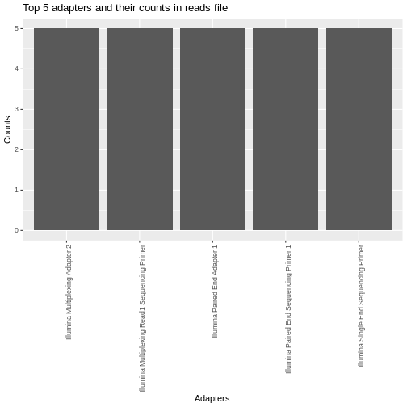

Introduction
qckitfastq is part of the planned qckit suite of packages from the Computational Biology Core at Brown University. The long-term goal of the qckit suite is to not only provide comprehensive quality control metrics for common genomics sequencing workflows, but to 1) also provide quality control visualizations for multiple samples through updated modules in multiQC [@Ewels2016], and 2) provide a public quality control database which allows benchmarking of QC metrics for an experiment against other similar experiments. Users of qckitfastq will have the option to enter SRA metadata and create visualizations from our database as well as submit their qc results (if submitting an SRA archive) to our database once these features have been implemented. The purpose of this particular package is to run quality control on FASTQ files from genome sequencing.
Why use qckitfastq?
Indeed there are many other quality control packages for FASTQ files existing already, including ShortReads [@shortread] and seqTools [@seqtools] for R and the popular FASTQC [@Andrews2010] Java-based program. qckitfastq offers a few advantages compared to these 3 programs for users who need such features:
- access to raw sequence and quality data
- access to data frames of the quality control results in addition to plots
- quality control analyses of the entire FASTQ file
- fast file processing
To break it down further, seqTools and ShortReads do not offer as comprehensive set of quality control metrics as qckitfastq and FASTQC. seqTools further provides limited access to raw data and intermediate analysis results. ShortRead provides users with access to the raw sequencing data and intermedite analysis results, but is inefficient on datasets exceeding 10 million reads. FASTQC meanwhile truncates any reads longer than 75bp as well as estimates overall quality only based on the first 100,000 reads of any FASTQ file. qckitfastq does not contain any of these limitations.
Running qckitfastq
qckitfastq provides the following metrics:
- Read length distribution
- Per base read quality
- Per read read quality
- GC content
- Nucleotide read content
- Kmer count
- Overrepresented reads
- Overrepresented kmers
- Adapter content
The simplest way to run qckitfastq is by executing run_all, a single command that will produce a report of all of the included metrics in a user-provided directory with some default parameters. However, each metric can also be run separately for closer examination.
Individual metrics
For each individual metric that qckitfastq provides, the user can choose to save either the data frame for the metric, the associated plot, or both.
Our example in this vignette has 25,000 reads, each 100bp long. The majority of metrics are run on the path to the FASTQ file. Some functions for quality control in this package are simply wrappers around seqTools due to the fact that their functions are fast. We provide these wrappers for the sake of completeness in quality control metrics. These wrappers require processing the FASTQ data through the seqTools::fastqq command first:
library(qckitfastq) infile <- system.file("extdata", "10^5_reads_test.fq.gz", package = "qckitfastq") fseq <- seqTools::fastqq(infile)
## [fastqq] File ( 1/1) '/home/travis/miniconda/envs/test-env/lib/R/library/qckitfastq/extdata/10^5_reads_test.fq.gz' done.
Read length distribution
read_length generates a data frame of read lengths and the number of reads with that particular read length. plot_read_length generates a distribution plot of the length of all reads. The generated plot would show the sequence length of all the sequences throughout the file. The plot is considered an indication of good data quality is all sequences have roughly the same sequence length with minimal deviations. The following plot shows that all reads in the file have sequence length of 100.
read_len <- read_length(fseq) kable(head(read_len)) %>% kable_styling()
| read_length | num_reads |
|---|---|
| 1 | 0 |
| 2 | 0 |
| 3 | 0 |
| 4 | 0 |
| 5 | 0 |
| 6 | 0 |
plot_read_length(read_len)

Per base quality
The per_base_quality function calculates quality score per base summary statistics of 10th, 25th, median, 75th and 90th quantiles across sequences. Currently it treats all quality score encodings as Phred+33. We can use the result to create a quality score distribution per position plot using plot_per_base_quality. As a basic heuristic, quality scores above 28 can be categorized as good (green), those from 20 to 28 can be categorized as medium (yellow), and under 20 is bad (red).
bs <- per_base_quality(infile) kable(head(bs)) %>% kable_styling()
| position | q10 | q25 | median | q75 | q90 |
|---|---|---|---|---|---|
| 1 | 32 | 32 | 32 | 32 | 32 |
| 2 | 32 | 32 | 32 | 32 | 32 |
| 3 | 32 | 37 | 37 | 37 | 37 |
| 4 | 37 | 37 | 37 | 37 | 37 |
| 5 | 37 | 37 | 37 | 37 | 37 |
| 6 | 37 | 41 | 41 | 41 | 41 |
plot_per_base_quality(bs)

Per read quality score
The per_read_quality function compute the mean quality score per read. We can then use plot_per_read_quality to generate a histogram of this statistics. The histogram is considered an indication of good data quality if the majority of reads have mean quality scores greater than 30. If a significant portion of reads have quality scores less than 30, then the data most likely has issues that need to be examined.
prq <- per_read_quality(infile) kable(head(prq)) %>% kable_styling()
| read | sequence_mean |
|---|---|
| 1 | 39.11 |
| 2 | 38.15 |
| 3 | 40.35 |
| 4 | 40.35 |
| 5 | 39.83 |
| 6 | 40.40 |
plot_per_read_quality(prq)

Per read GC content
The GC_content function computes the GC nucleotide content percentage per read, and plot_GC_content plots the distribution of GC content. As a general rule, an indication of good data quality is when the GC content percentage in each read is between 30 and 50% and roughly follows a normal distribution.
gc_df <- GC_content(infile) kable(head(gc_df)) %>% kable_styling()
| read | mean_GC |
|---|---|
| 1 | 43 |
| 2 | 37 |
| 3 | 39 |
| 4 | 40 |
| 5 | 42 |
| 6 | 38 |
plot_GC_content(gc_df)

Per position nucleotide read content
read_content calculates the total numbers across reads of each nucleotide base by position. plot_read_content plots the percentage of nucleotide content per position. We also provide an additional function read_base_content that allows the user to get the nucleotide base content by position across reads for a specific nucleotide (options are a,c,t,g,n). As a general rule, the plot would be considered an indication of good data quality when the percentage of each nucleotide sequence content is about evenly distributed across all bases. However, there are some types of analyses for which this will not be the case. For example, RNA-Seq will have an uneven sequence content distribution in the first 10 bases, and RRBS will have almost no cytosines and very high thymine content because the library prep protocol converts most C to T [@Meissner2005]. Knowledge of the library prep protocol is thus important for evaluating quality in terms of nucleotide sequence content.
scA <- read_base_content(fseq, content = "A") kable(head(scA)) %>% kable_styling()
| x |
|---|
| 4351 |
| 5341 |
| 5995 |
| 6262 |
| 6624 |
| 6689 |
rc <- read_content(fseq) kable(head(rc)) %>% kable_styling()
| position | a | c | t | g | n |
|---|---|---|---|---|---|
| 1 | 4351 | 7760 | 5807 | 6745 | 337 |
| 2 | 5341 | 4297 | 9661 | 5689 | 12 |
| 3 | 5995 | 3626 | 9264 | 6115 | 0 |
| 4 | 6262 | 4066 | 9324 | 5348 | 0 |
| 5 | 6624 | 4078 | 8019 | 6279 | 0 |
| 6 | 6689 | 3833 | 8001 | 6477 | 0 |
plot_read_content(rc)

Per position kmer count
kmer_count function produces the per position kmer count with given path to the FASTQ file and the kmer length specified.
km <- kmer_count(infile,k=6)
## [fastq_Klocs] File ( 1/1) '/home/travis/miniconda/envs/test-env/lib/R/library/qckitfastq/extdata/10^5_reads_test.fq.gz' done.
kable(head(km)) %>% kable_styling()
| 1 | 2 | 3 | 4 | 5 | 6 | 7 | 8 | 9 | 10 | 11 | 12 | 13 | 14 | 15 | 16 | 17 | 18 | 19 | 20 | 21 | 22 | 23 | 24 | 25 | 26 | 27 | 28 | 29 | 30 | 31 | 32 | 33 | 34 | 35 | 36 | 37 | 38 | 39 | 40 | 41 | 42 | 43 | 44 | 45 | 46 | 47 | 48 | 49 | 50 | 51 | 52 | 53 | 54 | 55 | 56 | 57 | 58 | 59 | 60 | 61 | 62 | 63 | 64 | 65 | 66 | 67 | 68 | 69 | 70 | 71 | 72 | 73 | 74 | 75 | 76 | 77 | 78 | 79 | 80 | 81 | 82 | 83 | 84 | 85 | 86 | 87 | 88 | 89 | 90 | 91 | 92 | 93 | 94 | 95 | |
|---|---|---|---|---|---|---|---|---|---|---|---|---|---|---|---|---|---|---|---|---|---|---|---|---|---|---|---|---|---|---|---|---|---|---|---|---|---|---|---|---|---|---|---|---|---|---|---|---|---|---|---|---|---|---|---|---|---|---|---|---|---|---|---|---|---|---|---|---|---|---|---|---|---|---|---|---|---|---|---|---|---|---|---|---|---|---|---|---|---|---|---|---|---|---|---|
| AAAAAA | 14 | 9 | 44 | 18 | 33 | 42 | 69 | 163 | 41 | 34 | 15 | 37 | 28 | 49 | 63 | 28 | 29 | 19 | 50 | 30 | 30 | 18 | 26 | 85 | 22 | 31 | 36 | 33 | 175 | 35 | 46 | 22 | 73 | 32 | 31 | 40 | 53 | 63 | 96 | 36 | 26 | 35 | 23 | 36 | 71 | 39 | 38 | 23 | 29 | 52 | 59 | 108 | 55 | 83 | 29 | 27 | 18 | 51 | 83 | 113 | 166 | 50 | 85 | 53 | 39 | 64 | 52 | 56 | 79 | 101 | 50 | 82 | 165 | 92 | 56 | 36 | 29 | 33 | 62 | 72 | 69 | 165 | 120 | 131 | 126 | 106 | 42 | 43 | 64 | 109 | 171 | 66 | 79 | 120 | 129 |
| AAAAAC | 8 | 4 | 1 | 24 | 2 | 9 | 21 | 14 | 142 | 5 | 7 | 1 | 12 | 13 | 18 | 32 | 15 | 4 | 6 | 3 | 11 | 12 | 2 | 14 | 47 | 4 | 10 | 6 | 9 | 23 | 22 | 32 | 11 | 52 | 10 | 5 | 1 | 29 | 48 | 81 | 23 | 8 | 15 | 7 | 13 | 17 | 23 | 21 | 9 | 13 | 22 | 34 | 67 | 40 | 27 | 13 | 12 | 8 | 16 | 28 | 28 | 134 | 28 | 65 | 37 | 20 | 16 | 11 | 28 | 58 | 80 | 18 | 43 | 84 | 44 | 18 | 14 | 9 | 8 | 19 | 20 | 7 | 12 | 17 | 21 | 54 | 55 | 18 | 17 | 27 | 17 | 55 | 34 | 11 | 19 |
| AAAAAG | 2 | 2 | 0 | 3 | 2 | 3 | 2 | 2 | 1 | 1 | 1 | 0 | 1 | 2 | 1 | 1 | 0 | 1 | 4 | 1 | 1 | 0 | 1 | 2 | 1 | 4 | 1 | 3 | 0 | 1 | 1 | 1 | 1 | 1 | 2 | 1 | 0 | 2 | 1 | 3 | 1 | 0 | 1 | 3 | 2 | 0 | 1 | 1 | 5 | 1 | 1 | 0 | 4 | 1 | 0 | 1 | 1 | 2 | 0 | 0 | 1 | 0 | 1 | 1 | 2 | 0 | 2 | 0 | 0 | 3 | 1 | 2 | 0 | 3 | 2 | 4 | 3 | 1 | 2 | 2 | 2 | 3 | 3 | 3 | 21 | 5 | 0 | 2 | 0 | 2 | 5 | 9 | 4 | 2 | 3 |
| AAAAAT | 8 | 28 | 29 | 34 | 44 | 34 | 33 | 65 | 28 | 58 | 43 | 36 | 36 | 21 | 39 | 41 | 75 | 74 | 42 | 99 | 28 | 33 | 26 | 29 | 49 | 38 | 25 | 38 | 34 | 170 | 24 | 43 | 18 | 32 | 31 | 48 | 76 | 42 | 23 | 21 | 24 | 31 | 30 | 25 | 45 | 69 | 21 | 40 | 31 | 35 | 39 | 78 | 79 | 29 | 92 | 27 | 41 | 20 | 46 | 79 | 95 | 55 | 29 | 42 | 14 | 60 | 63 | 84 | 54 | 44 | 26 | 36 | 48 | 85 | 67 | 69 | 46 | 36 | 33 | 68 | 110 | 101 | 211 | 92 | 120 | 87 | 85 | 61 | 49 | 51 | 144 | 124 | 67 | 86 | 145 |
| AAAACA | 0 | 2 | 5 | 4 | 4 | 3 | 4 | 6 | 3 | 3 | 3 | 6 | 8 | 3 | 4 | 6 | 5 | 1 | 11 | 8 | 5 | 3 | 15 | 13 | 16 | 8 | 6 | 6 | 3 | 13 | 5 | 10 | 8 | 6 | 30 | 3 | 4 | 9 | 13 | 14 | 9 | 8 | 16 | 10 | 13 | 4 | 10 | 34 | 10 | 9 | 14 | 13 | 15 | 14 | 16 | 97 | 17 | 27 | 9 | 21 | 18 | 34 | 33 | 35 | 45 | 9 | 29 | 39 | 14 | 37 | 43 | 5 | 5 | 14 | 16 | 9 | 7 | 15 | 13 | 19 | 6 | 13 | 35 | 12 | 12 | 10 | 13 | 14 | 16 | 14 | 101 | 21 | 23 | 9 | 17 |
| AAAACC | 2 | 8 | 4 | 1 | 25 | 2 | 9 | 21 | 15 | 143 | 4 | 8 | 1 | 11 | 13 | 15 | 32 | 14 | 4 | 6 | 3 | 11 | 10 | 2 | 16 | 47 | 5 | 9 | 5 | 8 | 21 | 20 | 27 | 12 | 53 | 11 | 6 | 1 | 26 | 50 | 77 | 22 | 8 | 13 | 7 | 12 | 19 | 22 | 20 | 9 | 11 | 21 | 29 | 65 | 35 | 27 | 13 | 10 | 7 | 16 | 25 | 27 | 132 | 26 | 63 | 37 | 19 | 14 | 9 | 27 | 58 | 80 | 17 | 44 | 84 | 44 | 18 | 11 | 8 | 6 | 19 | 18 | 8 | 11 | 16 | 22 | 53 | 57 | 16 | 20 | 26 | 17 | 55 | 32 | 11 |
Overrepresented reads
overrep_reads produces a data frame consisting of overrepresented reads and their counts in decreasing order of counts. Here overrepresented is defined as unique reads that have counts larger than 0.1% of the total reads in the file. plot_overrep_reads produces a density plot of the counts and marks the top 5 overrepresented reads in red.
overrep_reads<-overrep_reads(infile) knitr::kable(head(overrep_reads,n = 5)) %>% kable_styling()
| read_sequence | count |
|---|---|
| TGGGTGTGAGGAGTTCAGTTATATGTTTGGGATTTTTTAGGTAGTGGGTGTTGAGCTTGAACGCTTTCTTAATTGGTGGCTGCTTTTAGGCCTACTATGG | 123 |
| CCCCAAACCCACTCCACCTTACTACCAGACAACCTTAGCCAAACCATTTACCCAAATAAAGTATAGGCGATAGAAATTGAAACCTGGCGCAATAGATATA | 122 |
| CACTAGGAAAAAACCTTGTAGAGAGAGTAAAAAATTTAACACCCATAGTAGGCCTAAAAGCAGCCACCAATTAAGAAAGCGTTCAAGCTCAACACCCACT | 120 |
| CTAAACCTAGCCCCAAACCCACTCCACCTTACTACCAGACAACCTTAGCCAAACCATTTACCCAAATAAAGTATAGGCGATAGAAATTGAAACCTGGCGC | 117 |
| TAAACCTAGCCCCAAACCCACTCCACCTTACTACCAGACAACCTTAGCCAAACCATTTACCCAAATAAAGTATAGGCGATAGAAATTGAAACCTGGCGCA | 116 |
plot_overrep_reads(overrep_reads)

Overrepresented kmers
overrep_kmer generates a data frame of overrepresented kmers with its maximum log2(observed/expected) ratio and the position of the maximum obs/exp ratio in descending order. Only those kmers with a ratio greater than 2 are returned in the data frame. We can also create a boxplot of the obs/exp ratio thatn includes plotting the top 2 (or n) kmer outliers.
overkm <-overrep_kmer(infile,7)
## [fastqq] File ( 1/1) '/home/travis/miniconda/envs/test-env/lib/R/library/qckitfastq/extdata/10^5_reads_test.fq.gz' done. ## [fastq_Klocs] File ( 1/1) '/home/travis/miniconda/envs/test-env/lib/R/library/qckitfastq/extdata/10^5_reads_test.fq.gz' done.
knitr::kable(head(overkm,n=10)) %>% kable_styling()
| row | position | obsexp_ratio | kmer |
|---|---|---|---|
| 15353 | 6 | 11.109619 | TGTTTGA |
| 16316 | 2 | 10.580131 | TTTGTGT |
| 8175 | 1 | 10.552171 | CTTTGTG |
| 12031 | 5 | 9.685497 | GTGTTTG |
| 12259 | 7 | 9.638035 | GTTTGAG |
| 15296 | 4 | 9.565904 | TGTGTTT |
| 8066 | 56 | 9.445229 | CTTGAAC |
| 16112 | 3 | 9.444925 | TTGTGTT |
| 12108 | 13 | 9.314122 | GTTCAGT |
| 2553 | 54 | 9.278962 | AGCTTGA |
plot_overrep_kmer(overkm)

Adapter content
adapter_content computes the counts of a pre-determined set of adapter sequences and reports back any exceeding 0.1% of the total reads, sorted from most abundant to least abundant. plot_adapter_content creates a bar plot of the top 5 most common adapters. In this instance we will use a different file to compute adapter content, as the first example has no adapter contamination. This function is only available for macOS/Linux due to a dependency on RSeqAn/C++14, which is not supported on current Bioconductor Windows build machines.
if(.Platform$OS.type != "windows") { infile2 <- system.file("extdata", "test.fq.gz", package = "qckitfastq") ac_sorted <- adapter_content(infile2) kable(head(ac_sorted)) %>% kable_styling() plot_adapter_content(ac_sorted) }
